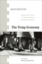

|
Tomboys
A Literary and Cultural History
Abate, Michelle Ann
338 pp • 6x9 • Spring 2008
paper 978-1-59213-723-7
cloth 978-1-59213-722-0
|
 |
Reclaiming
Class
Women, Poverty, and the Promise of Higher Education in America
edited by Adair, Vivyan C. and Sandra L. Dahlberg 280
pp • 6x9 • Spring 2003
paper 978-1-59213-022-1
cloth 978-1-59213-021-4
|
|
The Wars We Inherit
Military Life, Gender Violence, and Memory
Amy, Lori E.
216 pp • 5.5x8.25 • Spring 2010
paper 978-1-59213-961-3
cloth 978-1-59213-960-6
|
|
Family
and Gender Among American Muslims
Issues Facing Middle Eastern Immigrants And Their Decendants
edited by Aswad, Barbara C. and Barbara Bilgé 344
pp • 6x9 • Spring 1996
paper 978-1-56639-443-7
cloth 978-1-56639-442-0
|
 |
Conceiving Masculinity
Male Infertility, Medicine, and Identity
Barnes, Liberty Walther
228 pp • 5.5x8.25 • Spring 2014
paper 978-1-43991-042-9
cloth 978-1-43991-041-2 |
 |
The Hirschfeld Archives
Violence, Death, and Modern Queer Culture
Bauer, Heike
240 pp • 6x9 • Spring 2017
paper 978-1-4399-1433-5
cloth 978-1-4399-1432-8
|
 |
The
Woman I Was Not Born To Be
A Transsexual Journey
Brevard, Aleshia 272 pp • 6x9 •
Fall 2000
paper 978-1-56639-840-4
cloth 978-1-56639-839-8
|

|
Economies of Desire
Sex and Tourism in Cuba and the Dominican Republic
Cabezas, Amalia L.
232 pp • 5.5x8.25 • Spring 2009
paper 978-1-59213-750-3
cloth 978-1-59213-749-7
|
 |
Rethinking
Sex
Social Theory and Sexuality Research
edited by Connell, R. W. and G. W. Dowsett 192
pp • 5.5x8.25 • Spring 1993
paper 978-1-56639-073-6
cloth 978-1-56639-072-9
|
 |
The Man-Not
Race, Class, Genre, and the Dilemmas of Black Manhood
Curry, Tommy J.
294 pp • 6x9 • Spring 2017
paper 978-1-4399-1486-1
cloth 978-1-4399-1485-4
|
 |
Violent Belongings
Partition, Gender, and National Culture in Postcolonial India
Daiya, Kavita 274 pp • 6x9 • Spring 2008
paper 978-1-59213-743-5
cloth 978-1-59213-743-5
|
 |
Critical Race Theory
The Cutting Edge
Third Edition
edited
by Delgado, Richard and Jean Stefancic
856 pp • 7x10 • Spring 2013
paper 978-1-4399-1061-0
cloth 978-1-4399-1060-3 |
 |
Am
I Still a Woman?
Hysterectomy and Gender Identity
Elson, Jean 264 pp • 5.5x8.25 •
Fall 2003
paper 978-1-59213-211-9
cloth 978-1-59213-210-2
|
 |
Q
& A
Queer in Asian America
edited by Eng, David L. and Alice Y. Hom 445
pp • 7x10 • Fall 1998
paper 978-1-56639-640-0
cloth 978-1-56639-639-4
|
|
Transfeminist Perspectives in and beyond Transgender and Gender Studies
edited by Enke, Anne268 pp • 6x9 • Spring 2012
paper 978-1-4399-0747-4
cloth 978-1-4399-0746-7
|

|
Youth Violence
Sex and Race Differences in Offending, Victimization, and Gang Membership
Esbensen, Finn-Aage, Dana Peterson, Terrance J. Taylor and Adrienne Freng
244 pp • 6x9 • Fall 2010
paper 978-1-4399-0072-7
cloth 978-1-4399-0071-0
|
 |
The
Story of Reo Joe
Work, Kin, and Community in Autotown, U.S.A.
Fine, Lisa M. 256 pp • 6x9 • Spring
2004
paper 978-1-59213-258-4
cloth 978-1-59213-257-7
|

|
Ladies and Gents
Public Toilets and Gender
edited by Gershenson, Olga, Barbara Penner
262 pp • 6x9 • Spring 2009
paper 978-1-59213-940-8
cloth 978-1-59213-939-2
|
 |
Marriage
in a Culture of Divorce
Hackstaff, Karla B. 292 pp • 6x9 •
Fall 1999
paper 978-1-56639-725-4
cloth 978-1-56639-724-7
|
 |
Swimming Against the Tide
African American Girls and Science Education
Hanson,
Sandra L.
224 pp • 5.5x8.25 • Fall 2008
paper 978-1-59213-622-3
cloth 978-1-59213-621-6
|
 |
Jews
and Gender
Responses to Otto Weininger
edited by Harrowitz, Nancy A. and Barbara Hyams 352
pp • 6x9 • Fall 1994
paper 978-1-56639-249-5
cloth 978-1-56639-248-8
|

|
The Temp Economy
From Kelly Girls to Permatemps in Postwar America
Hatton, Erin, foreword by Nelson Lichtenstein
232 pp • 5.5x8.25 • Fall 2010
paper 978-1-4399-0081-9
cloth 978-1-4399-0080-2
|
|
Legal
Inversions
Lesbians, Gay Men, and the Politics of the Law
edited by Herman, Didi and Carl Stychin 272
pp • 6x9 • Fall 1995
paper 978-1-56639-377-5
cloth 978-1-56639-376-8
|
|
Disorders
of Desire
Sexuality and Gender in Modern American Sexology
Irvine, Janice M. 320 pp • 6x9 •
Fall 2005
paper 978-1-59213-151-8
|

|
Transgender
Care
Recommended Guidelines, Practical Information, and Personal Accounts
Israel, Gianna E. and Donald E. Tarver, foreword by Diane Shaffer,
M.D. 304 pp • 6x9 • Fall 1997
paper 978-1-56639-852-7
cloth 978-1-56639-571-7
|
 |
The
Forest and the Trees
Sociology as Life, Practice, and Promise
Johnson,
Allan G.
Revised and Expanded Edition
216 pp • 5.5x8.25 • Spring 2008
paper 978-1-59213-876-0
cloth 978-1-59213-875-3
|
 |
The
Forest and the Trees
Sociology as Life, Practice, and Promise
Third Edition
Johnson,
Allan G.
198 pp • 6x9 • Fall 2014
paper 978-1-43991-187-7
cloth 978-1-43991-186-0 |
 |
The
Gender Knot
Unraveling Our Patriarchal Legacy
Johnson, Allan G. 320 pp • 6x9 •
Spring 2005
paper 978-1-59213-383-3
cloth 978-1-59213-382-6
|
 |
The
Gender Knot
Unraveling Our Patriarchal Legacy
Third Edition
Johnson,
Allan G.
322 pp • 6x9 • Fall 2014
paper 978-1-43991-184-6
cloth 978-1-43991-183-9 |
 |
Just Queer Folks
Gender and Sexuality in Rural America
Johnson, Colin R.
264 pp • 6x9 • Spring 2013
paper 978-1-4399-0998-0
cloth 978-1-4399-0997-3 |
 |
On
the Man Question
Gender and Civic Virtue in America
Kann, Mark E. 352 pp • Spring 1991
cloth 978-0-87722-807-3 |
 |
The
Politics of Manhood
Profeminist Men Respond to the Mythopoetic Men's Movement
(And the Mythopoetic Leaders Answer)
edited by Kimmel,
Michael S.
400 pp •
6x9 • Fall 1995
paper 978-1-56639-366-9
cloth 978-1-56639-365-2 |
 |
Heroes
in Hard Times
Cop Action Movies in the U.S.
King, Neal 282 pp • 5.5x8.25 • Spring
1999
paper 978-1-56639-702-5
cloth 978-1-56639-701-8
|
 |
Achieving
Against the Odds
How Academics Become Teachers of Diverse Students
edited by Kingston-Mann, Esther and Tim Sieber 240
pp • 6x9 • Spring 2001
paper 978-1-56639-851-0
cloth 978-1-56639-850-3
|
 |
East Is West and West Is East
Gender, Culture, and Interwar Encounters between Asia and America
Kuo, Karen
220 pp • 5.5x8.25 • Fall 2012
paper 978-1-4399-0587-6
cloth 978-1-4399-0586-9
|
|
Running
Scared
Masculinity and the Representation of the Male Body
Lehman, Peter 256 pp • 6.5x9.25 •
Fall 1993
paper 978-1-56639-222-8
cloth 978-1-56639-099-6
|
 |
Roy
Orbison
The Invention of an Alternative Rock Masculinity
Lehman, Peter 224 pp • 6x9 • Spring
2003
paper 978-1-59213-037-5
cloth 978-1-59213-036-8
|
 |
Officially
Gay
The Political Construction of Sexuality by the U.S. Military
Lehring, Gary L. 248 pp • 5.5x8.25 •
Spring 2003
paper 978-1-59213-035-1
cloth 978-1-59213-034-4
|
 |
Machos,
Maricones, and Gays
Cuba and Homosexuality
Lumsden, Ian 304 pp • 5.5x8.25 •
Fall 1995
paper 978-1-56639-371-3
cloth 978-1-56639-370-6
|
 |
The Gendered Executive
A Comparative Analysis of Presidents, Prime Ministers, and Chief Executives
edited by Martin, Janet and MaryAnne Borrelli
274 pp • 6x9 • Fall 2016
paper 978-1-4399-1364-2
cloth 978-1-4399-1363-5 |
|
The Politics of State Feminism
Innovation in Comparative Research
McBride, Dorothy E. and Amy G. Mazur
318 pp • 6x9 • Fall 2010
paper 978-1-4399-0208-0
cloth 978-1-4399-0207-3
|
 |
Unbought and Unbossed
Transgressive Black Women, Sexuality, and Representation
Melancon, Trimiko
256 pp • 5.5x8.5 • Fall 2014
paper 978-1-43991-146-4
cloth 978-1-43991-145-7 |
 |
Damaged Goods?
Women Living with Incurable Sexually Transmitted Diseases
Nack, Adina
264 pp • 5.5x8.25 • Spring 2008
paper 978-1-59213-708-4
cloth 978-1-59213-707-7
|

|
The
Sorcery of Color
Identity, Race, and Gender in Brazil
Nascimento, Elisa Larkin
336 pp • 6x9 • Fall 2006
paper 978-1-59213-351-2
cloth 978-1-59213-350-5
|
 |
Sexual
Strangers
Gays, Lesbians, and Dilemmas of Citizenship
Phelan, Shane 232 pp • 6x9 • Fall
2000
paper 978-1-56639-828-2
cloth 978-1-56639-827-5
|
 |
Fashioning Diaspora
Beauty, Femininity, and South Asian American Culture
Reddy, Vanita
280 pp • 6x9 • Spring 2016
paper 978-1-4399-1155-6
cloth 978-1-4399-1154-9
|
 |
Waiting
on Washington
Central American Workers in the Nation's Capital
Repak, Terry A. 272 pp • 5.5x8.25 •
Spring 1995
paper 978-1-56639-302-7
cloth 978-1-56639-301-0 |
 |
The
Changing of the Guard
Lesbian and Gay Elders, Identity, and Social Change
Rosenfeld, Dana 264 pp • 5.5x8.25 •
Spring 2003
paper 978-1-59213-031-3
cloth 978-1-59213-030-6
|
 |
Medicalized
Masculinities
edited by Rosenfeld, Dana and Christopher A. Faircloth
272 pp • 6x9 • Fall 2005
paper 978-1-59213-098-6
cloth 978-1-59213-097-9
|
 |
Unzipped
Genes
Taking Charge of Baby-Making in the New Millennium
Rothblatt, Martine 201 pp • 5.5x8.25
• Spring 1997
paper 978-1-56639-554-0
cloth 978-1-56639-522-9 |
|
Catheters, Slurs, and Pickup Lines
Professional Intimacy in Hospital Nursing
Ruchti, Lisa C.
226 pp • 6x9 • Spring 2012
paper 978-1-4399-0753-5
cloth 978-1-4399-0752-8
|
 |
Prison
Masculinities
edited by Sabo, Don, Terry A. Kupers and Willie London 296
pp • 7x10 • Fall 2000
paper 978-1-56639-816-9
cloth 978-1-56639-815-2
|
 |
Terrorizing Latina/o Immigrants
Race, Gender, and Immigration Politics in the Age of Security
Sampaio, Anna
230 pp • 6x9 • Fall 2015
paper 978-1-4399-1286-7
cloth 978-1-4399-1285-0
|
 |
Making Modern Love
Sexual Narratives and Identities in Interwar Britain
Sigel, Lisa Z.
256 pp • 6x9 • Fall 2012
paper 978-1-4399-0805-1
cloth 978-1-4399-0804-4
|
|
Feminism and Affect at the Scene of Argument
Beyond the Trope of the Angry Feminist
Tomlinson, Barbara
288 pp • 6x9 • Spring 2010
paper 978-1-4399-0247-9
cloth 978-1-4399-0246-2
|
 |
The
Package Deal
Marriage, Work, and Fatherhood in Men's Lives
Townsend, Nicholas W. 264 pp • 6x9 •
Spring 2002
paper 978-1-56639-958-6
cloth 978-1-56639-957-9
|
|
A
Genealogy of Queer Theory
Turner, William B. 256 pp • 6x9 •
Spring 2000
paper 978-1-56639-787-2
cloth 978-1-56639-786-5 |

|
Troubling Gender
Youth and Cumbia in Argentina's Music Scene
Vila, Pablo and Pablo Semán, contributions by Eloísa Martín and María Julia Carozzi
230 pp • 6x9 • Fall 2011
paper 978-1-4399-0267-7
cloth 978-1-4399-0266-0
|
 |
Dark
Continent of Our Bodies
Black Feminism and the Politics of Respectability
White, E. Frances 208 pp • 5.5x8.25 •
Spring 2001
paper 978-1-56639-880-0
cloth 978-1-56639-879-4
|
 |
No More Invisible Man
Race and Gender in Men's Work
Wingfield, Adia Harvey
212 pp • 5.5x8.25 • Fall 2012
paper 978-1-4399-0973-7
cloth 978-1-4399-0972-0
|